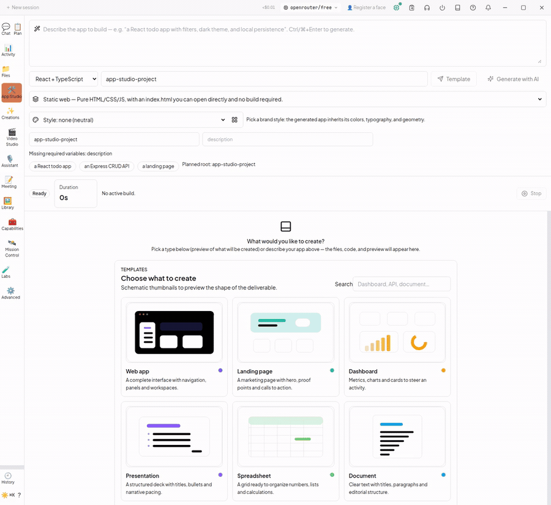
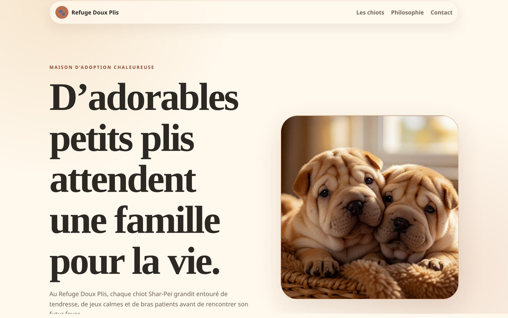

No foundation model included
You bring a provider, a subscription, an API key or a local model. Code Buddy is the agent and the routing layer.
Source-available · BSL 1.1 · candidate 2.3.0
Repository tools and configurable model routing. The release criterion is a fresh installation with a small local model and a first task checked independently. This path is not proven here.
$ buddy try
a configured model · inspect the output
requests FizzBuzz + tests
inspect files and run project checks
do not infer success from process exit
Configuration and source wiring do not establish a user outcome. See the scope →
French presentation · September 13, 2026
The multi-AI hub, the installation command and optional perception components, introduced with French narration and captions.
The big picture
The source describes model routing, repository tools, context and optional interfaces. Each user outcome needs a captured execution; configuration alone is not validation.
The release criterion remains a fresh installation with a small local model and a checked first task. Current statuses and reasons →
Historical captures · outside the current catalogue
The captures below are dated historical accounts. They have not been revalidated on this candidate and do not establish the current App Studio, coding-loop or provider outcomes.


The output is real too
App Studio produced the editorial layout, copy, navigation and working preview from a plain-language brief. The puppy photos were generated locally; this historical account is not revalidated here.

The files above remain historical media, not accepted execution traces for this candidate. See the current catalogue for statuses, reasons and recorded scenario limits.
Setup and checks
Choose a configured provider using the guide. The final command requests a FizzBuzz demo; inspect the files and check the result independently. This is not a reproducible proof of the candidate.
Read the getting started guide →npm install -g @phuetz/code-buddybuddy onboard # configure your providerbuddy doctor # inspect prerequisitesbuddy tryOne engine, many surfaces
The outcomes described on these cards are not proven here. The component traces accepted in the catalogue have narrower scenario limits. Read the source guides for configuration and boundaries.
Reads a repo, edits files, runs commands and verifies the result through a stateful multi-turn loop.
02 / desktopDescribe an app; get real npm install, a dev server, live preview, capped auto-fix and GitHub push.
03 / routingSwitch providers, fail over, ensemble answers or ask several models to critique and synthesize.
04 / controlRun Ollama or LM Studio with permission modes, sandbox tiers, secret handling and fail-closed guards.
05 / networkPeers stream events and call each other’s models and read-only tools across your own network.
06 / extensionConnect external tools and expose Code Buddy to other hosts — with the same permission boundary.
07 / mediaPrompt → scene plan → clips → Piper narration → karaoke captions → an ffmpeg montage.
08 / cockpitAn Electron workspace for chat, files, workflows, fleet, reasoning, App Studio and Video Studio.
No hype required
Code Buddy is broad because it is an open engine, not a hosted model. Here are the trade-offs before you install it.
You bring a provider, a subscription, an API key or a local model. Code Buddy is the agent and the routing layer.
Ollama at €0 is private and unmetered, but speed and quality depend on the model and machine you choose.
The Fleet, desktop and integrations require configuration and their own prerequisites. Read each guide before enabling them.
Provider names, a desktop screenshot and source wiring are not proof of their user outcomes. The catalogue records the current status, reason and trace for each tracked feature.
Source-available and inspectable
Start with one command. Keep the model on your machine, use the plan you already pay for, or put several agents to work together.

Built in public